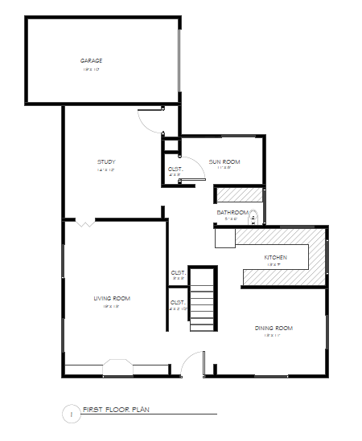
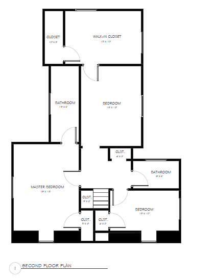

6 Rose Lane, Flourtown, PA 19031
This lovely colonial style house is located in a safe, quiet neighborhood on Rose Lane, fewer than 2 miles from the historic Chestnut Hill section of Philadelphia. It is within 400 yards of shopping, banking and schools, making it very convenient for families, singles and retirees.
Built in 1939 with a center hall plan, the downstairs consists of a living room with a working fireplace and built-in bookshelves, an adjoining study or den with built-in bookcase and closet, a remodeled kitchen and pantry with top of the line appliances, granite countertops, tile floors and radiant heat, a remodeled powder room, and a breakfast room with sliding doors that open to the rear patio. New heating and central air conditioning were recently installed.
The second floor has four bedrooms with two full baths, one with a Jacuzzi bathtub and the remodeled Master Bath with a steam shower, beautiful tiling, Hansgrohe plumbing, and a rainforest showerhead. There is plenty of closet space in each bedroom and two linen closets in the upper hallway. One bedroom is currently used as a walk-in closet with floor to ceiling mahogany shelving.
The full basement, also recently remodeled, has a new waterproofing system and is set up for an office.
For sale at $539,000.

